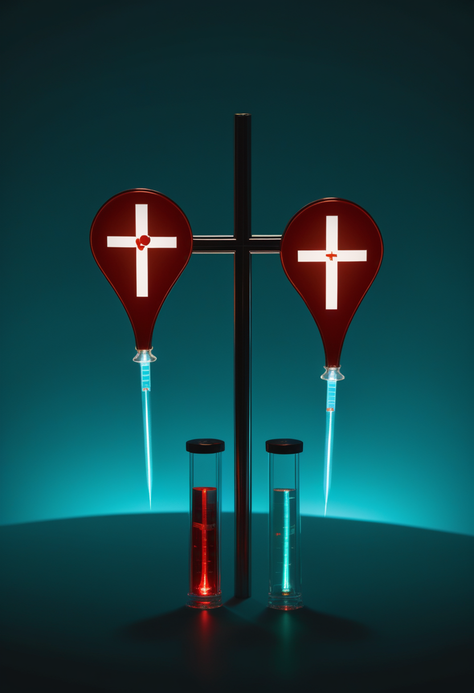
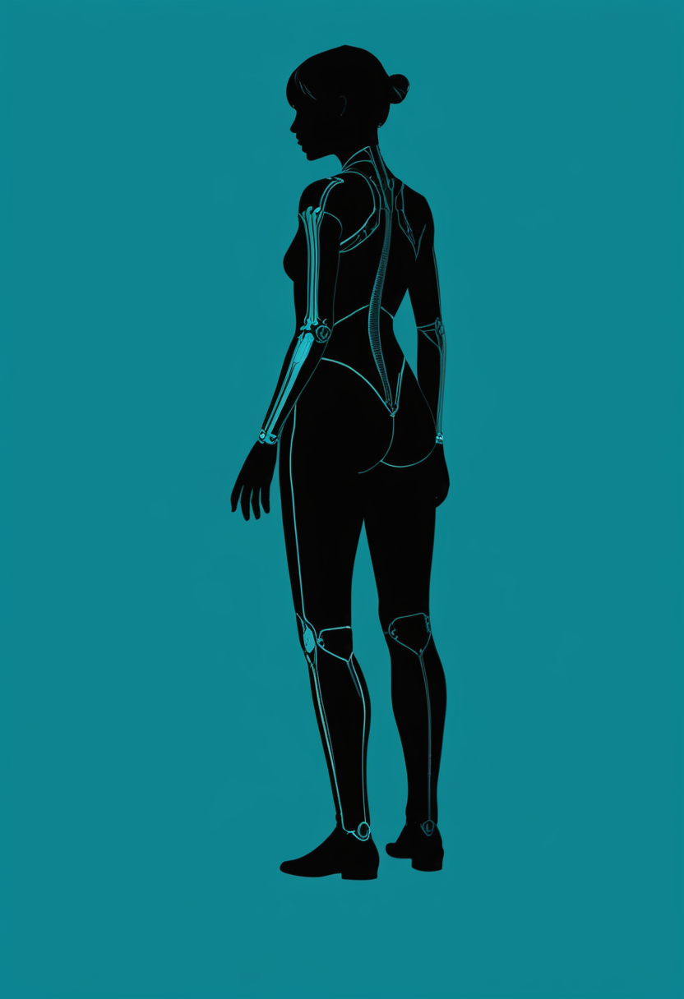
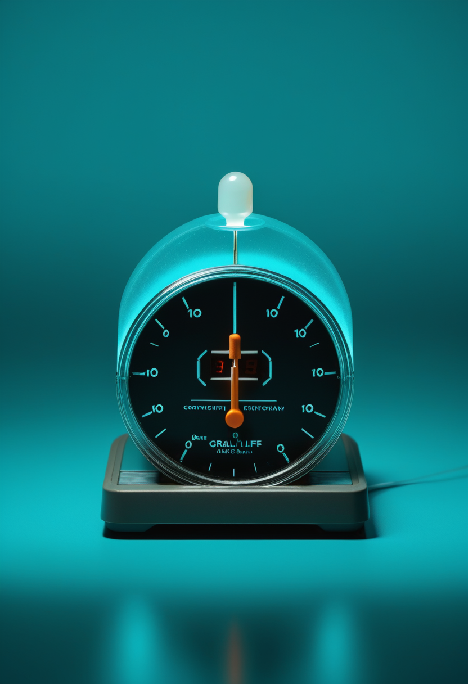
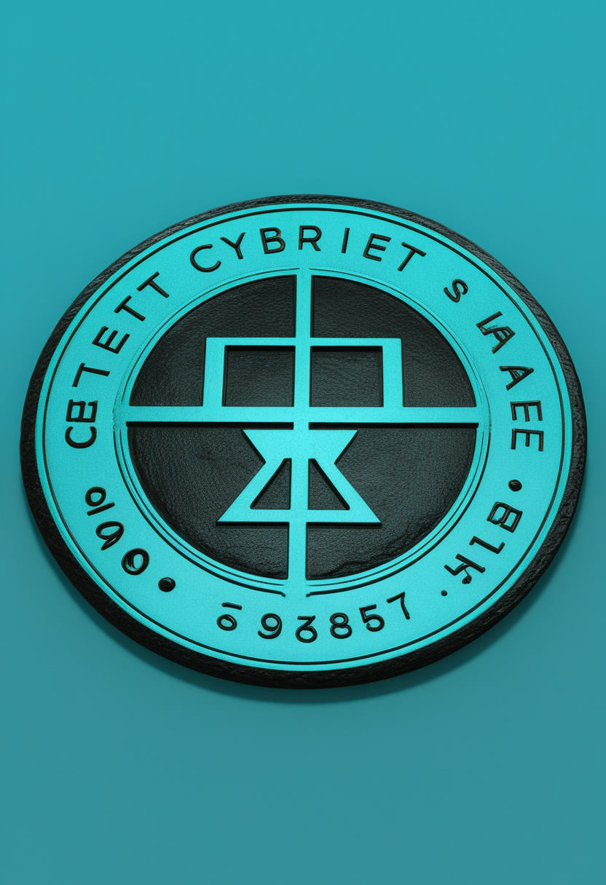
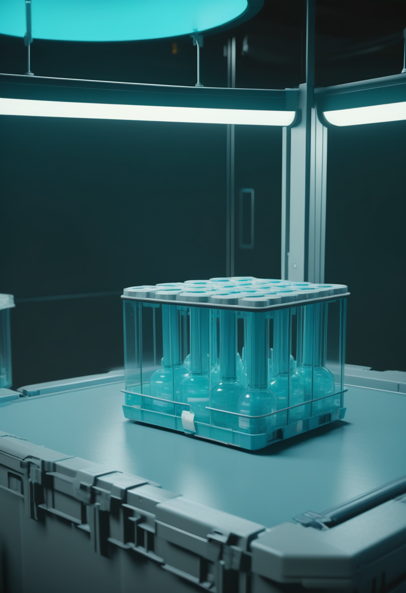
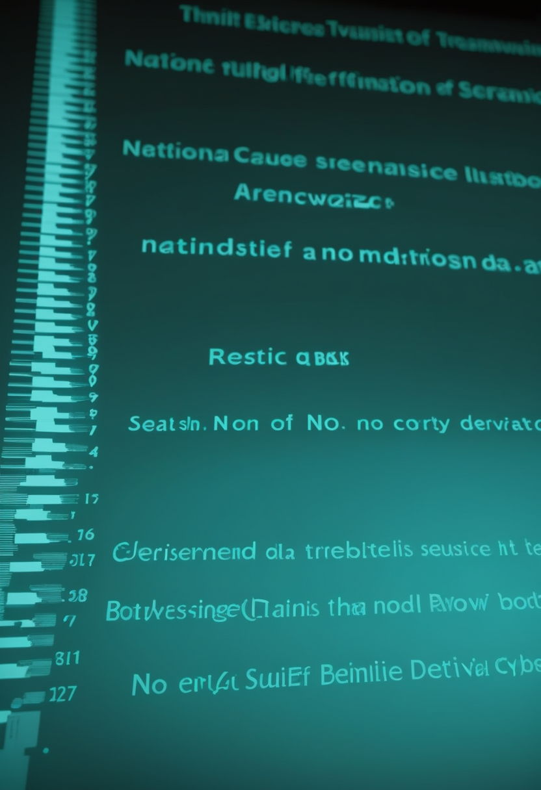
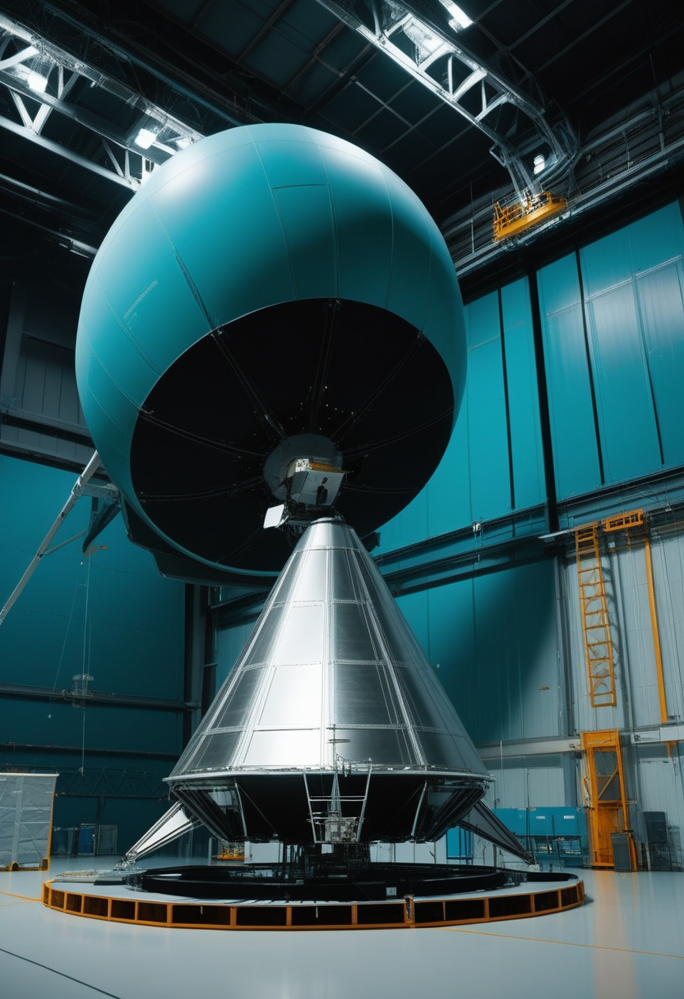

木曜日の便り。コンゴ民主共和国のエボラは流行宣言から105日目を迎え、ECDCの最新集計(8月26日更新・基準日8月25日)で確定5,656例・死亡2,715人、致死率は約48%に達した。国際調整グループが配分したワクチンErvebo 7万回分のうち、2万回分はこの型に効くかどうかを確かめる第3相試験に充てられる ― 届いたのは答えでなく、答えを探る手段だった。命の章では、承認判断まで34日に迫ったアピテグロマブと、年1回投与を目指すサラナーセンの登録試験の内訳、そして成人31人の実世界データが体重と食欲の回復を示したことを伝える。自由の章では、中国が侵襲型BCIをクラスIIIに位置づける規制を整えたこと、カナダ初のNeuralink被験者となった元警察官のこと、視線入力研究が「どこを見たか」から「何をしたいか」へ軸足を移していることを報じる。基盤の章は、エボラの最新数字とワクチン配分の内訳、そして米国麻疹の集団発生件数に生じた記載の食い違いを扱う。畏敬の章では、ローマン宇宙望遠鏡が打ち上げまで残り3日となったことと、LHCが2030年までの長期停止に入ったこと、そして彗星が若い惑星系に材料を運んでいる証拠を伝える。そして美の章では、トルコの洞窟で見つかった16,500年前のカメの埴輪群と、精神疾患の「脳の双子」に薬を試す研究の新しい定量データを並べた。
8/26号の続報 ― コンゴ民主共和国のエボラは、流行宣言(5月14日)から105日目を迎えた。ECDCの8月26日更新(基準日8月25日、報告データは8月24日まで)で確定例5,656・死亡2,715、致死率は約48%。前号で伝えた8月22日基準の5,514例・2,642人から、2回の報告日で+142例・+73人である。隔離入院中は792人、回復者は1,245人。震源のイトゥリ州だけで4,716例・2,119人が、36ある保健区のうち28区に及んでいる。対応の側も動いてはいる ― 国際調整グループ(ICG)がエボラワクチンErvebo 7万回分を配分し、WHOとAfrica CDCは8月20日にこれを歓迎する声明を出した。内訳は、前線と医療従事者向けに5万回分、そして2万回分が第3相臨床試験に充てられる。だが、その試験が必要だという事実自体が、この流行の厄介さを言い表している。Erveboはザイール型エボラに対して承認された製品であり、今回のBundibugyo型に効くかどうかは分かっていない。実験室と動物のデータが「いくらかの防御があるかもしれない」と示唆しているにすぎない。ワシントン・ポストは8月26日、封じ込めが流行に追い越されていると報じ、深刻な資金不足と広範な誤情報を挙げた。届いたのは、効くと分かっているワクチンではなく、効くかどうかを調べるための試験だった。
9月30日のFDA判断期限まで、本日から34日。Scholar Rockが8月21日に出した更新は、三極の進み方の違いをそのまま示している。米国では、査察でOAI分類となったCatalent Indianaを生物学的製剤承認申請(BLA)から外した後、代替の充填施設のみで審査が進んでいる。同社は9月30日のPDUFA日までに承認が下りる見込みを維持しており、しかも「その日までのいつでも承認されうる」として、米国での発売準備を承認と同時に動かせる状態に整えたと述べている。欧州は仕切り直しで、8月20日に販売承認申請を撤回し、代替施設を載せて再申請する。日本はむしろ前進した ― PMDAとの間で追加の国内臨床試験は不要という合意が成立し、年末までに新薬承認申請(JNDA)を提出する見通しである。アピテグロマブは、SMAで筋肉そのものを標的とする候補として初めて、主要な第3相試験(SAPPHIRE)で統計学的に有意かつ臨床的に意味のある効果を示した薬剤にあたる。

ビオジェンは、アンチセンス核酸サラナーセンを第1相の良好な結果に基づいて登録試験(第3相)3本へ進めた。狙いはスピンラザ(ヌシネルセン)の後継で、最大の違いは投与間隔である ― 年1回の投与で足りる設計になっている。3本の試験は乳児・青年・成人をそれぞれ対象とし、いずれも5年間の追跡を行う。第1相で示された数字のうち説得力があるのは二つだった。すでに遺伝子治療を受けた患者において、神経細胞の傷害を映す指標であるニューロフィラメント軽鎖が約70%低下したこと。そして1年という長い投与間隔にもかかわらず、WHOの運動マイルストーンに改善がみられたことである。ビオジェンはこの第3相のデータをもって各国の承認申請に進む方針を示している。年に何度も髄腔内投与を受ける負担を減らせるかどうかが、実際の生活では効果と同じくらい重い論点になる。

新薬の話の陰で、既存薬が成人に何をしているかのデータも出てきている。2型・3型のSMA成人31人を対象にした実世界の観察では、経口薬リスジプラム(エブリスディ)の忍容性は良好で、多くの患者が副作用を報告しなかった。運動機能と生活の質に臨床的に意味のある改善がみられた人もいる。興味深いのは予期していなかった効果のほうで、約3分の1の患者に体重増加と食欲の改善が現れた ― SMAの成人では嚥下や咀嚼の筋力低下から低栄養が持続的な問題になるため、これは運動スコア以上に生活を左右しうる。長期の全体像は第4相のWeSMA試験が担う。全病型を対象に、実際の使われ方の中で安全性と有効性を前向きに追う設計である。
今号の三本は、SMA治療が「効くか」から「続けられるか」へ移っていることを示す。アピテグロマブは承認の可否ではなく、どの工場で充填するかという製造の問題で日程が動いている。サラナーセンの売りは効果の大きさではなく投与が年1回で済むこと。リスジプラムで語られたのは運動スコアではなく体重と食欲だった。薬が効くのが当たり前になった領域では、評価軸は生活の側へ降りてくる。

Neurotech Reportsは8月24日付で、BCIをめぐる潮目の変化を三つの出来事の重なりとして整理した ― 中国が製品を市場に出したこと、米国が創業者に資金を付けたこと、そしてEUが規制当局に検討を命じたことである。制度の側の動きは中国が最も速い。国家薬品監督管理局(NMPA)は6月30日、「BCI医療機器の製品分類に関するガイドライン」と「BCI医療機器の命名に関するガイドライン」を公布し、侵襲型・埋込み型をクラスIII(最も規制の重い区分)に位置づけた。さらに5月1日からは、国家衛生健康委員会(NHC)が所管する「生物医学新技術の臨床研究と臨床転化応用に関する規程」が施行されている。これは侵襲・非侵襲双方のBCIを含む「生物医学新技術」を対象に、医療機関主導で早期臨床研究を進められる、NMPAとは別の並行トラックを作るものだ。承認と研究の二本の道が同時に整備されつつある。
制度が動く一方で、試験は国境を越えて広がっている。バンクーバー市警の巡査部長Lee Marten氏(48)は、ALSのために身体の自由の多くを失った後、5月にトロント・ウェスタン病院でNeuralinkの埋込み手術を受けた。カナダで初の被験者である。カナダ保健省は2024年後半にCAN-PRIME試験(Canadian Precise Robotically Implanted Brain-Computer Interface)を承認し、トロント大学医療ネットワーク(UHN)を国内唯一の実施施設に指定していた。試験の目的は、埋込み機器N1と手術ロボットR1の安全性を評価し、四肢麻痺のある人が思考で外部機器を操作できるかという初期的な機能を確かめることにある。Marten氏は術後、神経信号でノートPCとスマートフォンを操作できるようになったと報じられている。報道は彼を世界で26人目のNeuralink被験者としているが、この順番は一次資料で確認できていない(要確認)。
埋込み型が注目を集める一方、視線入力の研究は別の問いに移りつつある。arXivに出た低視力者向けの研究(2607.06778)は、拡張現実の中で対象を選ぶ手段として、頭の向き・視線・指のどれが適するかを比較した ― 視線が常に最良とは限らず、利用者の視機能によって最適解が変わるという前提に立つ設計研究である。別の研究(2601.17404)は、日常的な作業を助ける介助ロボットアームを視線で制御する枠組みを扱う。さらに2601.15146は、VRでの視線操作において「見ただけ」と「選ぶつもりで見た」を取り違える誤作動を、異常検知の手法でリアルタイムに防ぐ仕組みを提案している。三本に共通するのは、視線を単なるポインタとして扱わず、意図の推定という一段深い層で解こうとする姿勢である。本号執筆環境ではarXiv本文へ直接アクセスできず、以下は検索経由で確認した題目と要旨に基づく(要確認)。
前号までは個々の技術成果を追ってきたが、今号で見えるのは制度と地理の指標である。中国はクラス分類と命名の規則まで整え、カナダは国内一施設に絞って試験を許した。技術がどこまで届くかは、電極の数ではなく、どの国の規則がどれだけ早く整うかで決まりつつある。視線入力の側は、まだ規則より前の、意図をどう読むかという問いの途中にある。
ECDCの8月26日更新(基準日8月25日、報告データは8月24日まで)で、コンゴ民主共和国の確定例は5,656、死亡は2,715となった。報告数から計算した致死率は約48.0%である。隔離入院中は792人、回復者は1,245人、把握された接触者の80.9%が追跡下にある。前回報告(8月24日付、データは8月23日まで)からの増加は+72例・+35人で、新規72例の内訳はイトゥリ61、北キブ7、オートウエレ3、バウエレ1だった。累計で最も重いのは震源のイトゥリ州で、単独で4,716例・2,119人の死亡を数え、州内36ある保健区のうち28区に及んでいる。イトゥリだけで全確定例の約83%、全死亡の約78%を占める計算になる。前号が伝えた8月22日基準の5,514例・2,642人からは、2回の報告日で+142例・+73人。増加の速度は落ちていない。

国際調整グループ(ICG)はコンゴ民主共和国へエボラワクチンErvebo 7万回分を配分し、WHOとAfrica CDCは8月20日、これを歓迎する共同の発表を出した。配分の内訳がこの流行の特殊さを映している ― 5万回分は前線の対応者と医療従事者の接種に、残る2万回分はBundibugyo型に対する第3相臨床試験に充てられる。理由は単純で、Ervebo はザイール型エボラウイルスに対して承認された製品であり、今回の流行を起こしているBundibugyo型に有効かどうかは確立していないからである。WHOは、初期の実験室データと動物データがいくらかの防御を示唆してはいるものの、それが人でどうかは未知だと明言している。ワシントン・ポストは8月26日、深刻な資金不足と広範な誤情報を挙げ、封じ込めが流行に追い越されつつあると報じた。承認済みワクチンのない型が、承認済みワクチンの臨床試験によって迎え撃たれているという構図である。

米CDCの8月20日時点の集計で、2026年の確定麻疹は2,777例。うち94%にあたる2,614例が集団発生に関連しており、47の管轄区域から2,761例、米国を訪れた海外からの旅行者で16例が報告されている。2026年の集団発生件数について、今回参照したCDCのページは36件と記載していた ― 本紙前号は同じ8月20日基準で32件としており、記載が更新された可能性がある(要確認)。すでに2025年通年の2,289例を上回っており、これは1991年以降で最も多い年間数だった。手続きは進行中で、米国の排除認定を検討する委員会が今月中にデータを審査し、汎米保健機構(PAHO)が11月に可否を公表する。「排除」は症例ゼロではなく、同一系統の国内伝播が12カ月を超えて続いていないという監視上の呼称であり、焦点は遺伝子配列の解析にある。
今号のエボラ二本は、対応が「無い」のではなく「間に合っていない」話である。ワクチンは届き、接触者の8割は追跡下にあり、回復者も1,245人いる。それでも増加は止まらない。しかも投入されるワクチンの3割弱は、効くかどうかを調べるための試験用だ。麻疹の94%が集団発生関連という数字も同じ構図を指す ― 散発ではなく連鎖が起きており、連鎖こそが排除認定の判定基準そのものである。

NASAのローマン宇宙望遠鏡は、打ち上げまで残り3日となった。予定は8月30日午前7時26分(米東部夏時間)、ケネディ宇宙センターのLC-39Aからファルコン・ヘビーで。ここ数日の工程は淡々と進んでいる ― 8月21日に飛行準備審査を通過、8月25日の夜間にフェアリングに収めた望遠鏡を危険物取扱施設からLC-39AのSpaceX格納庫へ移送、そこでファルコン・ヘビーと結合して最終適合確認と試験を行う。打ち上げ準備審査は8月28日にNASAとSpaceXが合同で開く予定である。特筆すべきは日程そのもので、このミッションが正式にコミットしていた準備完了日は2027年5月だった ― 9カ月の前倒しは、この規模の旗艦級科学ミッションでは稀な結果である。鏡の口径はハッブルと同じだが、一度のシャッターで捉える天域は約100倍。系外惑星については、これまでの惑星探索観測装置が見つけてきた総数を上回る、10万個規模の新発見が見込まれている。
宇宙の側が加速する一方、素粒子の側は長い休止に入った。CERNの大型ハドロン衝突型加速器(LHC)では、6月27日午前5時52分に第3期運転(Run 3)最後の陽子が周回し、データ取得が終了した。LHCは7月初めから長期停止3(LS3)に入っている。この期間に行われるのは単なる保守ではなく、高輝度LHC(HL-LHC)への大改造である。ATLAS実験は「高輝度時代に入った」と表明し、検出器の主要部分を入れ替える作業に着手した ― 衝突頻度が桁で上がる環境では、いまの検出器では信号を捌ききれないからだ。ビームが戻るのは2030年の予定で、実に4年半近い空白になる。8月4日にはHL-LHC期の物理を展望するブリーフィングが出された。加速器物理には、動かしている時間と作り替えている時間があり、いまは後者である。
8月24日付のNature Communicationsに、惑星系がどうやって材料を受け取るかに関わる観測が載った。舞台は若い恒星PDS 70 ― 形成途上の惑星が円盤の中に直接撮像された例として知られる天体である。研究チームが見つけたのは、この星をかすめるように通る系外彗星から昇華したとみられるガスの証拠だった。恒星に近づいた氷の小天体が熱で気化し、その成分が系の内側へ持ち込まれる ― 若い惑星系で物質がどう運ばれるかという問いに、観測的な手がかりが一つ加わったことになる。本号執筆環境からは論文本文へ直接アクセスできず、以下は検索経由で確認した内容に基づく(掲載日・誌名は確認済み、DOIは未取得。要確認)。なお同じ8月24日、NASAのAPODは彗星220Pの二度の突発増光を取り上げている ― ふだんは望遠鏡が要るほど暗いこの彗星が、約2万倍の明るさになった。
同じ週に、片方は9カ月早まり、片方は4年半止まる。ローマン望遠鏡が予定より早く飛べるのは、装置がすでに完成しているからであり、LHCが止まるのは、装置を作り替えなければ次が見えないからだ。観測装置の一生には、使う期間と作る期間が交互に来る。宇宙と加速器の日程は、月ではなく年の単位で動く。
トルコ北西部ビレジク県、ゲディッカヤの丘近くにあるイン洞窟で、約25個のカメを模した石灰岩製の埴輪が見つかった。ビレジク・シェイフ・エデバリ大学のデニズ・サル教授が率いる14人の考古学チームが5月18日から7月18日にかけて発掘した成果である。放射性炭素年代測定によれば、これらは紀元前およそ14,500年から11,200年、エピパレオリシック期(後期旧石器時代の終わりから中石器時代にかけて)にさかのぼる。最大のもので長さ約30センチ・幅約20センチ、一部は粘土で覆われていた。埴輪は洞窟内部で、建築的な構造物を囲むように円形に配置されて地面に差し込まれた状態で見つかっており、意図的な儀礼行為の跡だとみられている。サル教授は、洞窟が位置するゲディッカヤの丘そのものがカメの姿に似ており、それがこの造形行為の着想源になった可能性があると述べている。まだ「信仰」と呼ぶには時期尚早だとしつつも、多くの埴輪が丘の形を意識して作られたように見えるという。文字を持たない人々が、地形そのものを模して祈りの形を作っていた ― 美と信仰の起源が交わる場所である。
デジタルツイン脳の使い道が、観察から介入へさらに具体化してきている。bioRxivに出た研究(2026.03.06.710030、改訂版v2)は、個人の脳解剖と課題誘発の脳活動を神経細胞スケールの枠組みに統合し、介入を試せるヒト脳のデジタルツインを構築したと報告する。個別化されたツインは、集団コホートと臨床コホートの双方で診断横断的な精神病理を捉える、その人固有の皮質-皮質下ネットワーク表現型を再現したという。BME Frontiers(2026年2月、bmef.0231)の研究はさらに定量的で、個人のコネクトームから複数課題の神経行動ダイナミクスを予測する枠組みを228人で検証し、行動選択の予測精度90%超、反応時間の相関r\>0.85、BOLDパターンの相関r=0.84を得た。狙いは個別化治療である ― 実際の脳に電極を当てる前に、その人の写しの上で刺激の効き方を試す。査読前の段階もあり、結果の解釈にはなお留保が要る。
洞窟に埋められたカメの石と、計算機の中の脳の写し ― 隔たる16,500年の両端で、人は同じことをしている。目の前にないものの形を作り、それに働きかけて確かめようとする。一方は丘の姿を石に写し、もう一方は脳の働きを数字に写す。写しを作ることそのものが、人類史を通じて変わらない営みなのかもしれない。
コンゴ民主共和国のエボラは流行宣言から105日目を迎え、ECDCの最新集計(8月26日更新・基準日8月25日)で確定5,656例・死亡2,715人となった。配分されたワクチンErvebo 7万回分のうち2万回分は、この型に効くかどうかを確かめる第3相試験に充てられる。命の章では、承認判断まで34日に迫ったアピテグロマブ、年1回投与を目指すサラナーセンの登録試験の内訳、そして成人31人の実世界データが体重と食欲の回復を示したことを伝えた。自由の章では、中国が侵襲型BCIをクラスIIIに位置づける規制を整えたこと、カナダ初のNeuralink被験者となった元警察官のこと、視線入力研究が意図の推定という一段深い層に移りつつあることを報じた。基盤の章では、エボラの最新数字とワクチン配分の内訳、そして米国麻疹の集団発生件数に生じた記載の食い違いを扱った。畏敬の章では、ローマン宇宙望遠鏡が打ち上げまで残り3日となったこと、LHCが2030年までの長期停止に入ったこと、彗星が若い惑星系に材料を運んでいる証拠を伝えた。そして美の章では、トルコの洞窟で見つかった16,500年前のカメの埴輪群と、精神疾患の「脳の双子」に薬を試す研究の新しい定量データを並べた。
では、また明日の朝に。 — JaH